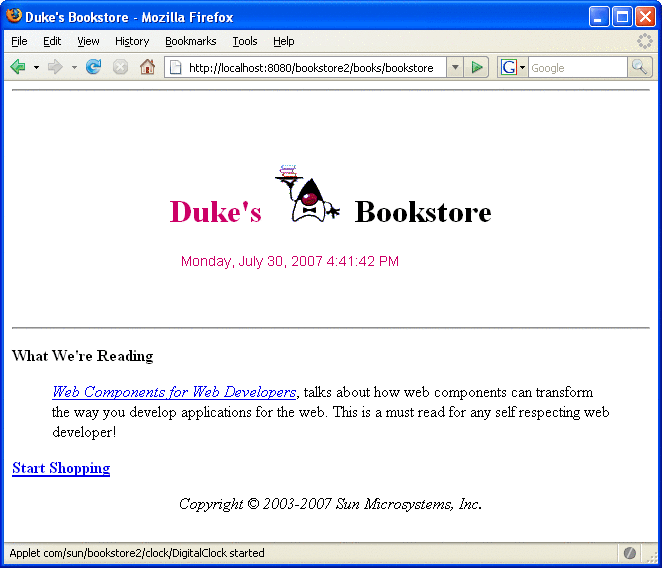

Including an Applet
You can include an applet or a JavaBeans component in a JSP page by using the jsp:plugin element. This element generates HTML that contains the appropriate client-browser-dependent construct (<object> or <embed>) that will result in the download of the Java Plug-in software (if required) and the client-side component, and in the subsequent execution of any client-side component. The syntax for the jsp:plugin element is as follows:
<jsp:plugin
type="bean|applet"
code="objectCode"
codebase="objectCodebase"
{ align="alignment" }
{ archive="archiveList" }
{ height="height" }
{ hspace="hspace" }
{ jreversion="jreversion" }
{ name="componentName" }
{ vspace="vspace" }
{ width="width" }
{ nspluginurl="url" }
{ iepluginurl="url" } >
{ <jsp:params>
{ <jsp:param name="paramName" value= paramValue" /> }+
</jsp:params> }
{ <jsp:fallback> arbitrary-text </jsp:fallback> }
</jsp:plugin>The jsp:plugin tag is replaced by either an <object> or an <embed> tag as appropriate for the requesting client. The attributes of the jsp:plugin tag provide configuration data for the presentation of the element as well as the version of the plug-in required. The nspluginurl and iepluginurl attributes override the default URL where the plug-in can be downloaded.
The jsp:params element specifies parameters to the applet or JavaBeans component. The jsp:fallback element indicates the content to be used by the client browser if the plug-in cannot be started (either because <object> or <embed> is not supported by the client or because of some other problem).
If the plug-in can start but the applet or JavaBeans component cannot be found or started, a plug-in-specific message will be presented to the user, most likely a pop-up window reporting a ClassNotFoundException.
The Duke’s Bookstore page /template/prelude.jspf creates the banner that displays a dynamic digital clock generated by DigitalClock (see Figure 5-3).
Figure 5-3 Duke’s Bookstore with Applet
Here is the jsp:plugin element that is used to download the applet:
<jsp:plugin
type="applet"
code="DigitalClock.class"
codebase="/bookstore2"
jreversion="1.4"
align="center" height="25" width="300"
nspluginurl="http://java.sun.com/j2se/1.4.2/download.html"
iepluginurl="http://java.sun.com/j2se/1.4.2/download.html" >
<jsp:params>
<jsp:param name="language"
value="${pageContext.request.locale.language}" />
<jsp:param name="country"
value="${pageContext.request.locale.country}" />
<jsp:param name="bgcolor" value="FFFFFF" />
<jsp:param name="fgcolor" value="CC0066" />
</jsp:params>
<jsp:fallback>
<p>Unable to start plugin.</p>
</jsp:fallback>
</jsp:plugin>